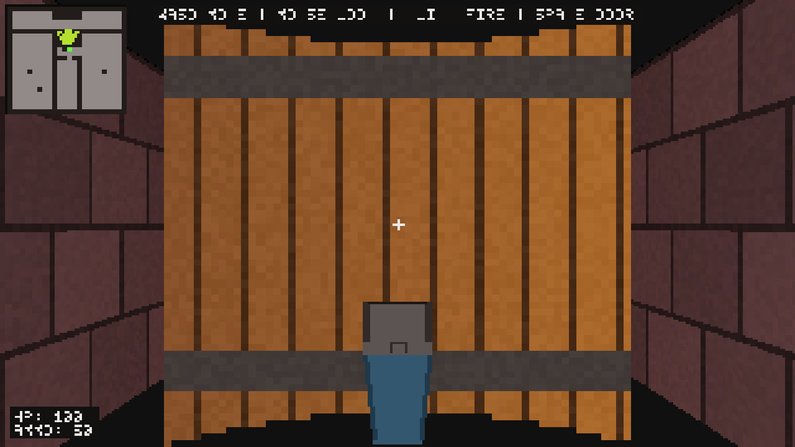

20 November 2026 · Agentic task loop · first-person raycaster
Raycaster Shooter · Qwen 3.8 27B base · Splash 1.7.0 · Tenaz main + Pi · base run 1
Tenaz ended BLOCKED after 9 h 32 min, 122 sessions and 22 tasks done: the final review returned CHANGES and added T019 (the spawn view), whose builder could not pass without changing a done task's checks, and no replan freed it. 49 sessions ended early, 39 of them at the turn budget. The playable build has a working mouse and a minimap, but its spawn view shows a barrel one cell ahead filling the screen; no person played it.

What was checked
- Runner final state BLOCKED on 20 November 04:04:47.053 UTC with 'no task is ready; open tasks: T019 [blocked]'. 22 tasks done, T004, T005 and T021 split, T015 dropped, T019 blocked. The three bootstrap steps passed on their first attempts (24 requirements, R24 manual). Final review cycle 1 returned CHANGES with verify passing and every requirement covered, and added T019. `verify --all` passed 38 of 38 model-written checks again after the run; not a hidden acceptance suite.
- Configuration: identical to pi-adapted run 2 (same brief by SHA-256, engine scripts apart from the model name and folder, Tenaz main 2f1b04c binary, Pi 1.4.0, thinking off, temperature 0.8, vision, generic engine, Tenaz defaults, sandbox off) except the checkpoint: mlx-community/Qwen3.8-27B-OptiQ-4bit instead of the pi-adapted one. Launched with --allow-weak-engine; the preflight reported reasoning=false cache=true tools=true vision=true.
- Runner events: 49 of 122 sessions ended early: 39 at the 60-turn builder or 40-turn budget, 6 after 20 turns without changing or reading anything new, 2 for the same bash call 5 times in a row and 2 for the same bash call with the same result 6 times in 12 calls. 33 turn-budget stops were continued in a fresh session. 11 replans added T015, T016, T017, T018, T020 and T021. Five conflicts were declared, where a builder could not pass without changing a done task's checks. No response stopped at the output limit; 2 requests ended in a provider error with no tokens.
- The agent left 590 of its own scratch files (probe scripts and screenshots) in the ignored .tenaz/private folder.
- Not played by a person. Claude captured the spawn view of the archived build and checked in the source that mouse turning uses 0.0025 radians per pixel. The model's own final reviewer reports walking, opening the door and killing the enemy in headless Chromium, and that the spawn does not match the brief: the barrel is one cell ahead and fully visible, and the door reads as a flat orange panel.
- Vision: no image refusals.
- Engine metrics: a fresh Splash process serving only this run. Its 4,907 summaries are 6 preflight requests and 4,901 run requests. 4,901 of the 4,949 proxy records match a Splash summary one-to-one and in order by (prompt, output, cached); the other 48 are empty records (46 aborted turns, 2 provider errors). Per session, the totals equal the Pi usage Tenaz journaled.
- Memory: Tenaz's 1,376 host samples run from start to end. Wired memory went from 26.8 GiB to about 45 GiB (median 44.6, maximum 46.6). Pressure was at warning in 166 samples and never critical; 0.1 GiB was swapped in.
- Public artifact: the reviewed static build (vite build --base ./ from the final project commit 97a56c2, unchanged source) and its spawn view at 1280x720. The prompt is the author's and is not republished; the project, raw logs, journal and sessions stay in the ignored local archive.
Limits of this evidence
Completion is the runner outcome. The base model on the setup of pi-adapted run 2, to see what the pi-adapted fine-tune changes. It decoded about 40% faster, because the DFlash2 drafter was trained for this model, but needed about 11 times the requests of run 2 and did not finish. One execution of two; see base run 2.
Configuration
The model, serving engine and agent used for this execution.
| Field | Value | Detail |
|---|---|---|
| Model · primary | Qwen 3.8 27B · primary · reasoning none (thinking off, as in the pi-adapted runs it is compared with) | OptiQ mixed precision: MLX affine 4-bit, group size 64, with 8-bit layers; vision tower in a bfloat16 sidecar |
| Checkpoint · primary | mlx-community/Qwen3.8-27B-OptiQ-4bit | primary model artifact · revision bf8b660b34d6b0f19d96339361e08de65b000a16 |
| Model · drafter | Qwen 3.8 27B DFlash2 · drafter | — |
| Checkpoint · drafter | incoai/Qwen3.8-27B-DFlash2 | drafter model artifact · revision 015e795645c74b1a0eeef3b570031fb62e769bc5 |
| Runtime | Splash 1.7.0 · One splash serve process per run, registered with Tenaz as a generic engine with the same start and stop scripts as pi-adapted run 2 except the model name and folder; started before the launch and never restarted. --model-dir on the local MLX folder, --max-context 128K, --reasoning-effort none (every request served with thinking off), --idle-release off, SSD prefix cache at its default quota, Neural Engine FFN split at share 0.32 from an earlier calibration, vision loaded. Temperature 0.8 pinned through the Tenaz proxy; top-p left to the engine. mode | inference engine and exact build |
| Harness | Pi coding agent over RPC driven by Tenaz main 2f1b04c (0.8.0 plus the recovery fixes for a deleted .tenaz/private) 1.4.0 | the agent or client that drove the run |
| Runner | Tenaz main · build 2f1b04c after 0.8.0 (unreleased) | open-source runner, github.com/aartiles/tenaz · how the runner evolved |
| Hardware | Apple MacBook Pro · 64 GB unified memory | hardware recorded for this execution |
| Workload | Raycaster Shooter · revision 1 | One-shot raycaster brief by @ddalcu, as posted by @Beamsters1, used verbatim as the Tenaz brief (same SHA-256 as every earlier Raycaster run); the local model wrote its own spec, verify and task plan. A controlled comparison with pi-adapted run 2: only the checkpoint changes, to the base model. No operator action after launch. |
| Context window | 131,072 tokens | maximum context configured for the serving runtime |
| Repetitions | 1 | executions recorded for this workload; one means an indicative result, not an estimate |
Inference measurements
Engine-side rates for this run. Each figure states its own statistic; figures from different runs are not interchangeable.
| Metric | Value | Definition |
|---|---|---|
| TTFT · median | 1.1 s | Median engine-reported TTFT across matched responses. · n=4901 · Mean 1.917 s. Includes the run's cache mix; not a prefill rate. |
| Decode · per-request median | 63.1 tok/s | Median of Splash's per-request decode rate across matched responses. · n=4901 |
| Decode · output-weighted | 64.6428 tok/s | Total output tokens divided by the sum of each request's output tokens over its decode rate. · n=4901 |
| Tokens per decode cycle · drafter | 8.0924 tokens/cycle | Output-token-weighted mean of Splash's tokens per decode cycle with the DFlash2 drafter (median 6.5). · n=4901 · Splash logs tokens per cycle, not drafted and accepted counts, so this is not an acceptance percentage. |
| Host wired memory · median | 44.6 GiB | Median host wired memory across Tenaz's 30-second samples from start to end of the run. · n=1376 · 26.76 GiB at the first sample, maximum 46.57 GiB. Host-wide, includes every process. |
| Swapped in during the run | 0.099 GiB | Sum of swap-in deltas across Tenaz's 30-second host memory samples; host-wide swap I/O, not resident memory. · n=1376 · Memory pressure normal in 1,210 samples and at warning in 166, between 19:15 on 19 November and 03:40 UTC on 20 November; never critical. Free memory fell to 0.08 GiB at its lowest. |
Agent session counters
Agent-wide usage totals. These include reasoning, tool calls and waiting, and are not model decode speed.
| Metric | Value | Definition |
|---|---|---|
| Run elapsed | 572.1 min | Session 001 start after the preflight (19 November 18:32:43.748 UTC) to BLOCKED (20 November 04:04:47.053 UTC); includes tools, checks and retries. · n=1 · 9 h 32 min 3.3 s; no pauses. |
| Agent sessions | 122 sessions | All harness sessions: 3 bootstrap, 78 builder, 26 reviewer, 11 replan, 3 split and 1 final reviewer. · n=1 |
| Sessions ended early | 49 sessions | Sessions with ok=false. · n=122 · 39 stopped at their turn budget, 6 after 20 turns without changing or reading anything new, 4 for repeating the same bash call. Tenaz continued 33 of the turn-budget stops in a fresh session. |
| Operator interventions | 0 actions | No pauses, relaunches, configuration changes or edits after the first session started. · n=1 |
| Model responses | 4,949 responses | All proxy request records; 46 are the empty records of turns Tenaz aborted and 2 ended in an error with no tokens. · n=1 |
| Matched model requests | 4,901 requests | Proxy responses matched one-to-one, in order and uniquely to Splash summaries by total prompt, output and cached-token triple. · n=1 · 6 preflight summaries unassigned and excluded; the 48 empty records have no Splash summary, and every Splash summary in the run window is matched. |
| Tool calls | 5,387 calls | Sum of harness tool_calls across all 122 session records. · n=122 |
| Tool errors | 282 errors | Pi tool executions that ended with isError, counted in the sessions' RPC logs. · n=5387 · 233 of them bash commands that exited with an error, such as a failing check; not a count of malformed tool calls. |
| Context compactions | 0 compactions | Compaction count across all session records. · n=122 |
Context and token counters
Token totals as reported by the harness or engine. Cached and cumulative figures are not additive with fresh input.
| Metric | Value | Definition |
|---|---|---|
| Maximum prompt context | 95,116 tokens | Maximum prompt input across matched responses; not the configured server window. · n=4901 |
| Cumulative input | 171,606,300 tokens | Sum of total prompt tokens across matched responses, including repeatedly reused context; not unique input. · n=4901 |
| Cached input | 167,607,232 tokens | Sum of prompt tokens Splash reported cached for matched responses. · n=4901 |
| Fresh input | 3,999,068 tokens | Total prompt input minus cached input for matched responses. · n=4901 |
| Output tokens | 1,466,007 tokens | Sum of output tokens across matched responses; thinking was off, so no reasoning output. · n=4901 |
| of which reasoning output | 0 tokens | Reasoning tokens reported by the proxy; Splash served every request with thinking off. · n=4901 |
| Prompt-cache token share | 97.6696 % | Cached prompt tokens divided by total prompt tokens, weighted by tokens across matched responses. · n=4901 |
Recorded check counters
Counts from the checks recorded with this run.
| Metric | Value | Definition |
|---|---|---|
| Tasks completed | 22 tasks | Final task cards marked done; 3 more were split into smaller cards, 1 was dropped by a replan and T019 was left blocked. · n=1 |
| Reviews returning changes | 4 reviews | Task review verdicts returning CHANGES (T004a, T006 and T009 on their first attempts, T021 on its second). The single final review returned CHANGES and added T019. · n=26 |
| Project checks passing | 38 checks | Checks passing in `verify --all` rerun after the run ended. · n=1 · Model-written checks, not an independent acceptance suite. |
Request records & provenance
4901 numeric request records in proxy order, each matched one-to-one to a Splash summary by total prompt, output and cached tokens. TTFT and decode come from Splash's own timing lines. Preflight summaries and the empty records of aborted turns are excluded. No prompts, tool results, session identifiers or local paths are included.
Run ID: 2026-11-19-qwen38-27b-base-optiq4-splash-v170-tenaz-main-2f1b04c-pi-raycaster-shooter-base-run1
One execution, with checks transcribed from the retained record. A completed session is not a quality score. Measurement method · All runs